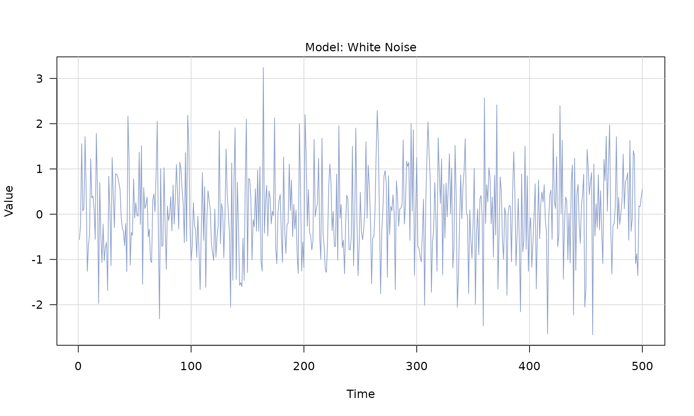
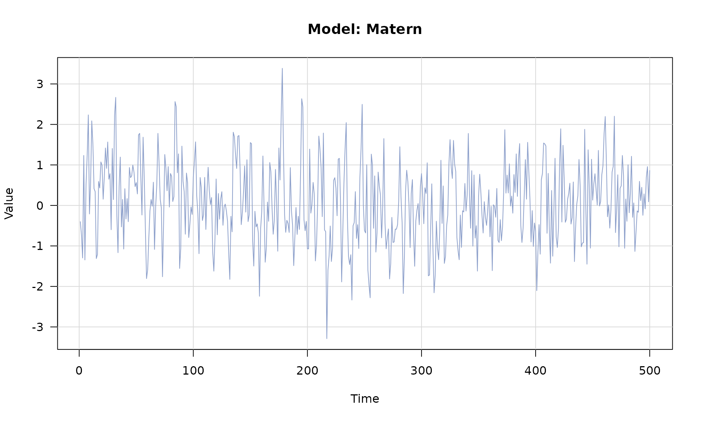
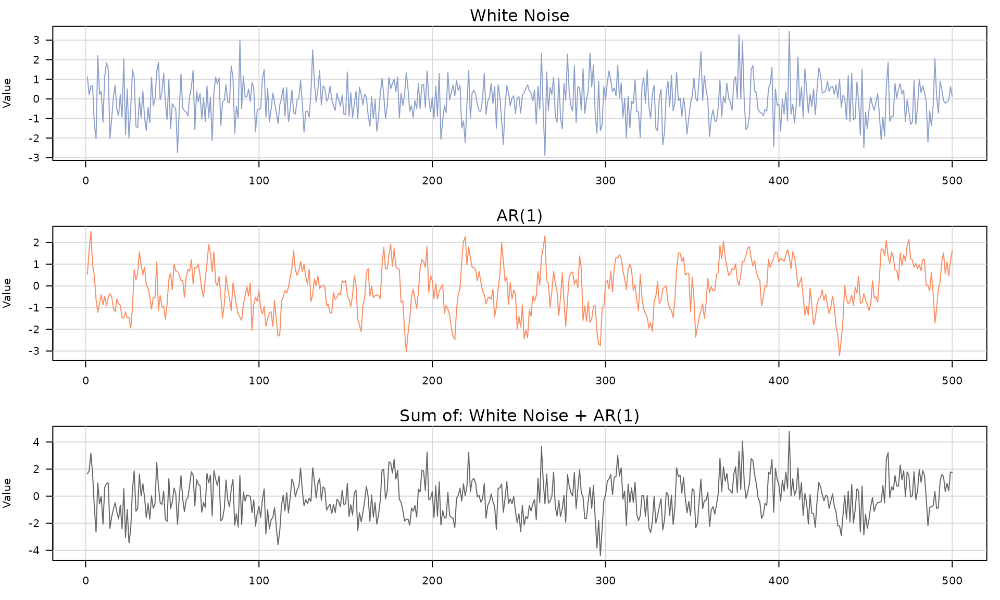

This vignette shows how to build stochastic models, combine them with
+, generate data, and plot the results.
You can build a single stochastic process with any of the following model constructors:
wn() (white noise)ar1() (AR(1))pl() (power-law)matern() (Matérn)rw() (random walk)flicker() (flicker)Each constructor returns a time_series_model object that
can be plotted or combined with others using +.

The generated object is agenerated_time_series with a
numeric series in $series:
head(series_wn$series)## [1] -0.56047565 -0.23017749 1.55870831 0.07050839 0.12928774 1.71506499
model_matern <- matern(sigma2 = 1, lambda = 1, alpha=1)
series_matern <- generate(model_matern, n = 500)
plot(series_matern)
Use + to build a composite model from multiple
stochastic processes. The result is a sum_model that can be
passed to generate().
## [1] "sum_model"
The composite output is a
generated_composite_model_time_series with:
series (the total sum)components (a list of each component series)n (length of the series)model (names of each component)parameters (parameters of each component)
names(series_wn_ar1)## [1] "series" "components" "n" "model" "parameters"